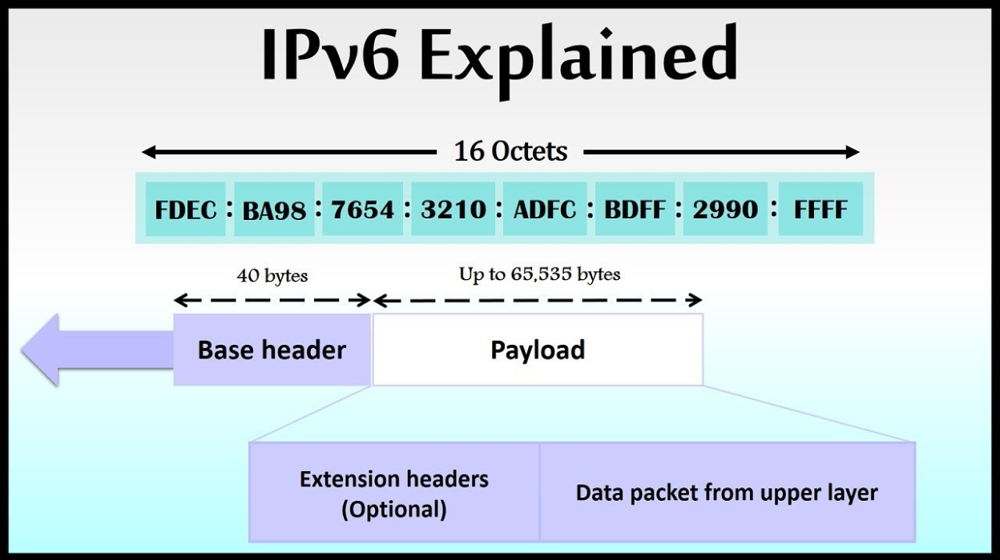

Overview of IPv6 architecture and benefits
Addressing and routing in IPv6
IPv6 addressing and routing are critical components of the internet protocol that have undergone significant changes to accommodate the growing demands of the internet. With its increased address space, improved security features, and optimized packet size, IPv6 provides a more scalable and efficient way to manage and route devices on the internet. While there are challenges associated with IPv6 addressing and routing, the benefits of improved scalability, security, and performance make it an essential upgrade for anyone who relies on the internet. As the internet continues to evolve, it is crucial that we adopt IPv6 to ensure continued growth and development of the global network.
